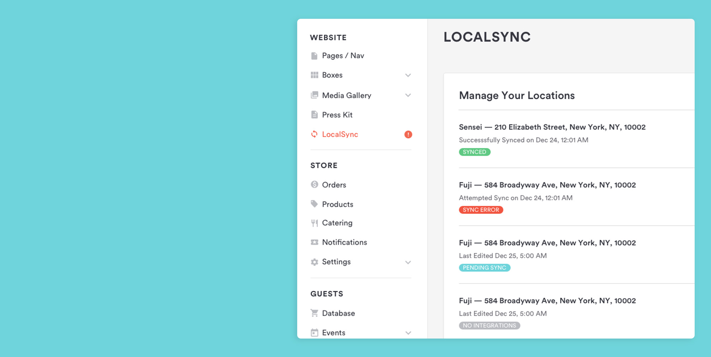
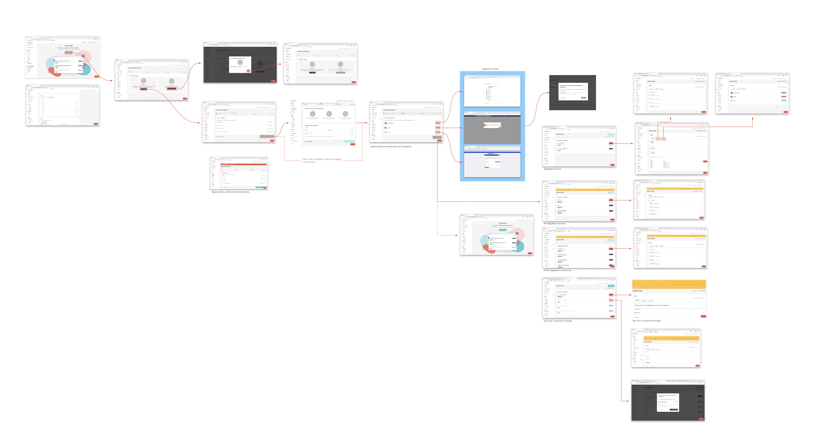
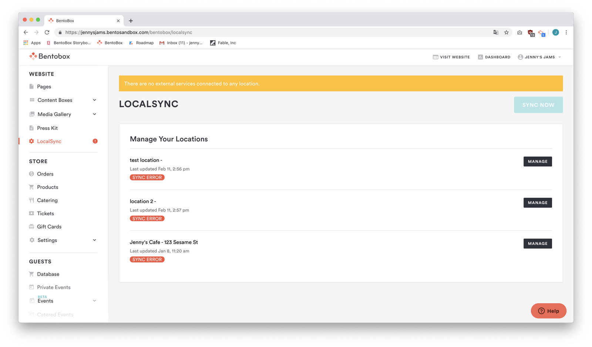
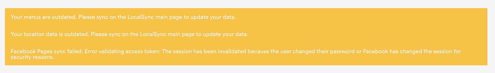
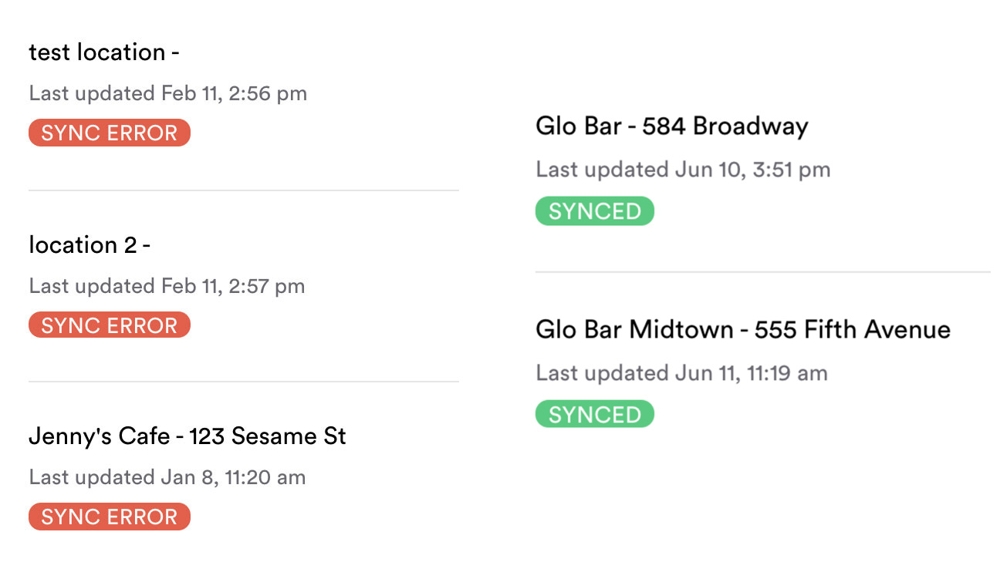
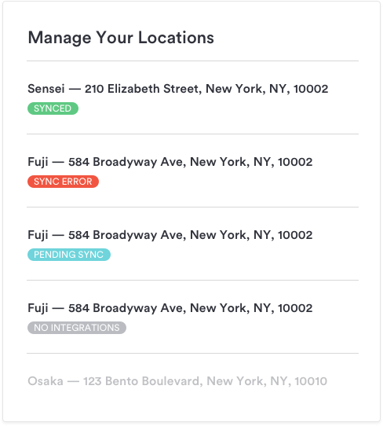
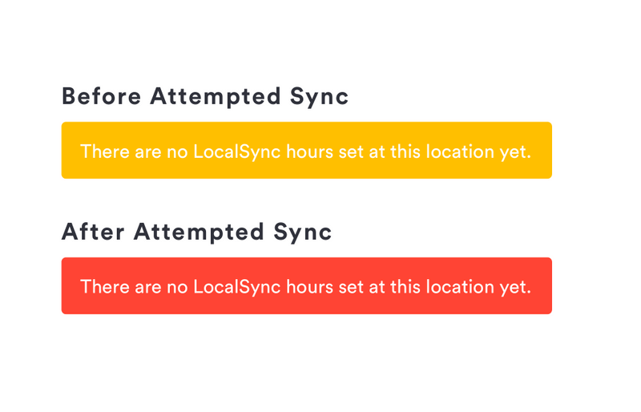
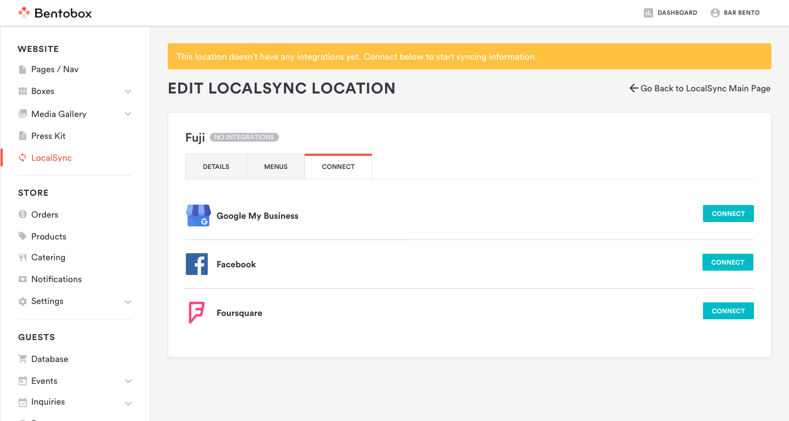
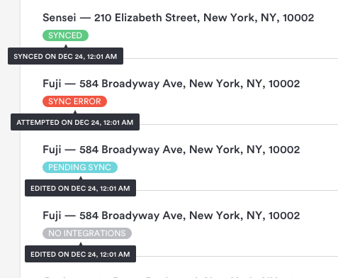
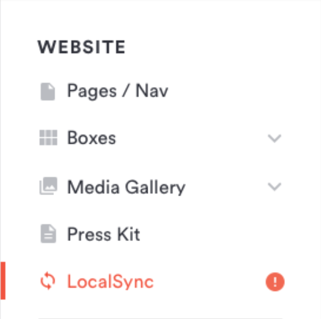

BentoBox / UX, UI
Defining Error States
LocalSync, a feature for syncing restaurant menus and location details, had low adoption and was overwhelming users with ambiguous error messages.
Design problem
Users were seeing errors in both the side navigation and the LocalSync page, creating confusion and a high volume of Customer Service contact. Technical integration errors were difficult to trace and often hard for users to act on.
Known constraints
Integration partners could return many API errors that were vague and technical, while a lack of field validation made errors difficult to reproduce.
Audit and goals
A feature teardown and a customer usage capture revealed that people reached a page full of errors before taking any action. The former system categorized every state other than successful sync as an error.


Goals
Differentiate true errors from ordinary statuses, make urgency clear, give people actionable next steps, and reduce fatigue from repeated, unintelligible alerts.
New statuses
The former catch-all “Sync Error” state was split into sync error, pending sync, and no integrations. Alerts distinguish warnings from failures, guide people to the relevant action, and reserve the side-navigation alert for genuine sync errors.

Warning versus error
Top-banner alerts use yellow for conditions that might impede sync and red for conditions that have already impeded it.

Guided messaging and flow
Banner copy was made more descriptive and actionable. A location without integrations opens directly to the connect tab, while hover and click details help people understand a status without cluttering the main interface.




Reduce occurrence of errors
The side-navigation alert icon was redefined to appear only for locations with genuine sync errors; pending sync and no integrations no longer trigger it.

Looking forward
The update made the experience clearer, while future work focused on better validation before data reaches integrations and continued monitoring of the most common errors.